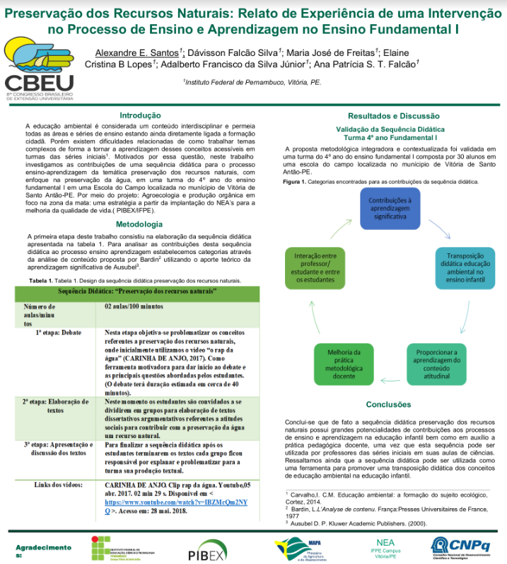
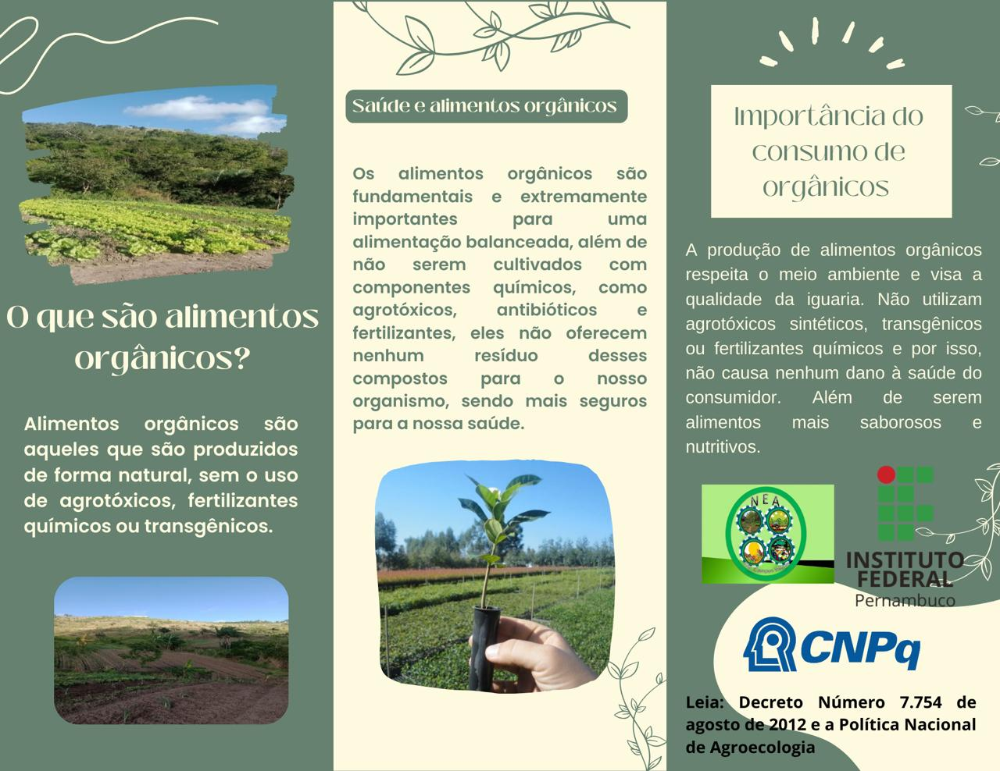
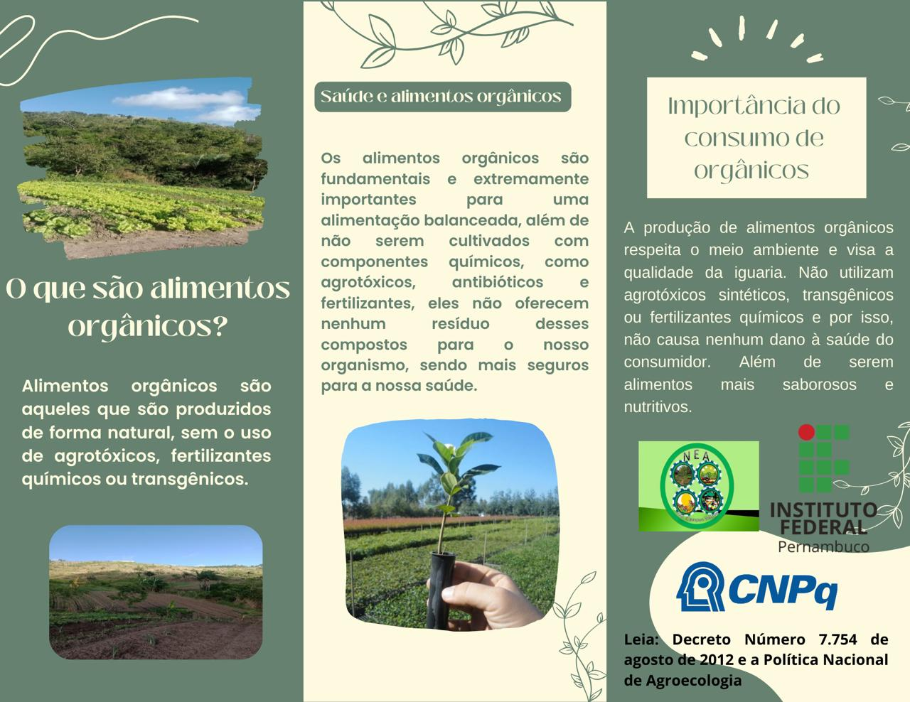

Produção Científica
19 de Junho de 2018 Este traballho foi publicado no 8º Congresso Brasileiro de Agroecologia.
Leia Mais...
Ana Patrícia Siqueira Tavares Falcão (IFPE – Campus Vitória/Coordenadora Geral)
Profa Gizelia Ferreira
Tecnicos: Dávisson Falcão e Elaine Lopes
Adalberto Francisco (Bolsista IEX/CNPq) Alexandre Emanoel (PIBEX/IFPE)
Eliane Rocha (Bolsista NEA)
Demichaelmax Melo (PIBEX/IFPE)
Maria José de Freitas (Bolsista EXPc/CNPq)
Géssica Sivla e Jaqueline Silva (Bolsista
IEX/CNPq) e Lillyane Silva (colaboradora)


Blog destinado à publicações referentes às ações do Núcleo de Estudos em Agroecologia (NEA) do IFPE - Campus Vitória de Santo Antão/PE, aprovado via chama do CHAMADA MCTI/MAPA/CNPQ Nº02/2016. Teve por objetivoimplantar o Núcleo de Agroecologia e Produção Orgânica (NEAS) no IFPE Campus Vitória /PEcompartilhando as boas práticas desenvolvidas nas diversas comunidades do município deVitória de Santo Antão, localizado na zona da mata e em comunidades do município de Afogados da Ingazeira, localizadas no Sertão do Pajeú.
Baixar FolderEste traballho foi publicado no 8º Congresso Brasileiro de Agroecologia.
Leia Mais...
 



 >
>
Pela primeira vez aconteceu o SEMAGE - Seminário de Agroecologia, Gênero e Educação no IFPE - Campus Vitória . Um evento em que o NEA organizou em parceria com o Núcleo de Estudos em Gênero e Diversidade (NEGED). O evento contou com uma programação diferenciada e teve um público participantes de 181 pessoas.
Leia Mais...


Mesa redonda: Agroecologia, gênero e Educação: realidade e possibilidades. Prof. Dr. Avelino Aldo de lima Neto (IFRN), Prof. Dra. Letícia Medeiros Jalil (UFRPE e Vice-presidente da Associação Brasileira de Agroecologia-ABA), Prof.a Ma Jéssica Sabrina de Oliveira Menezes (IFPE – Campus Paulista)
Leia Mais...